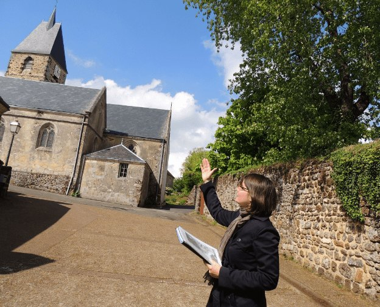
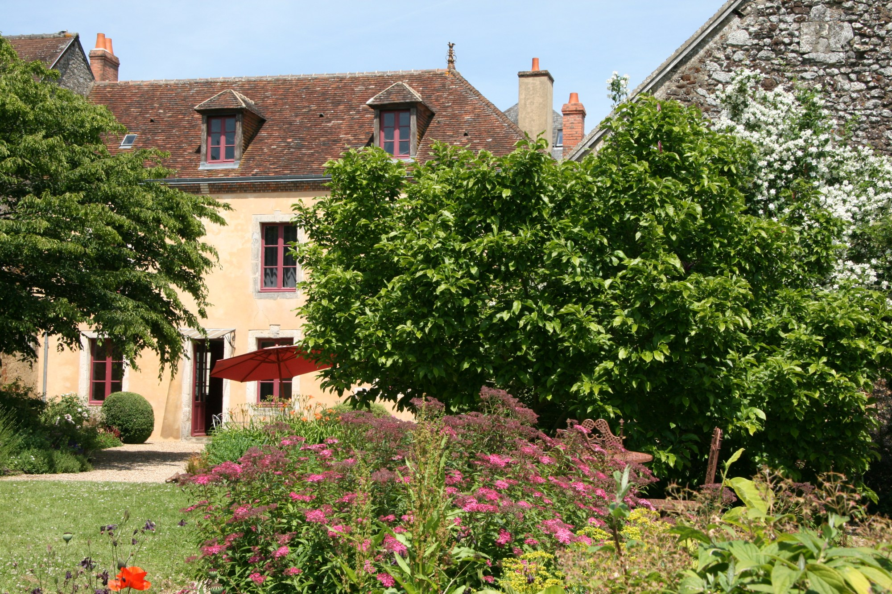
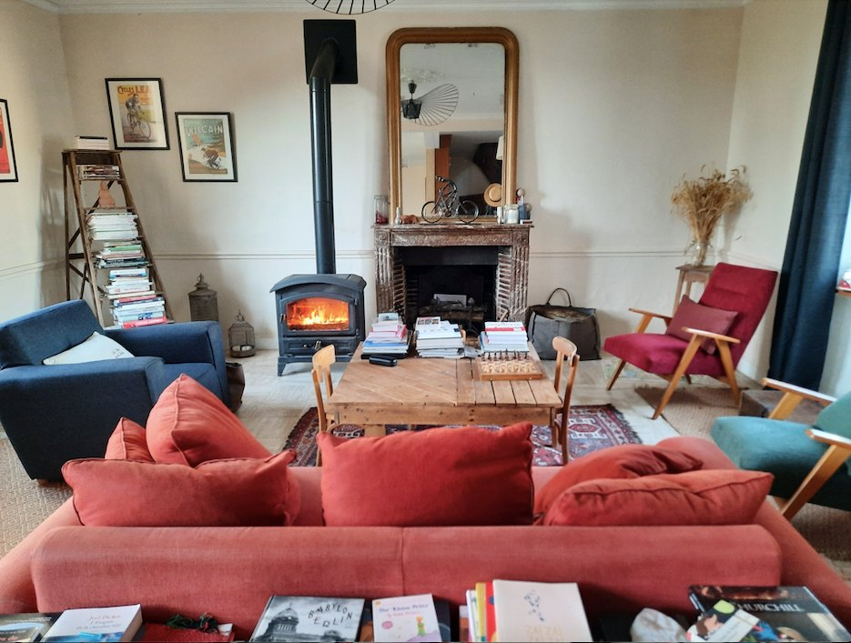
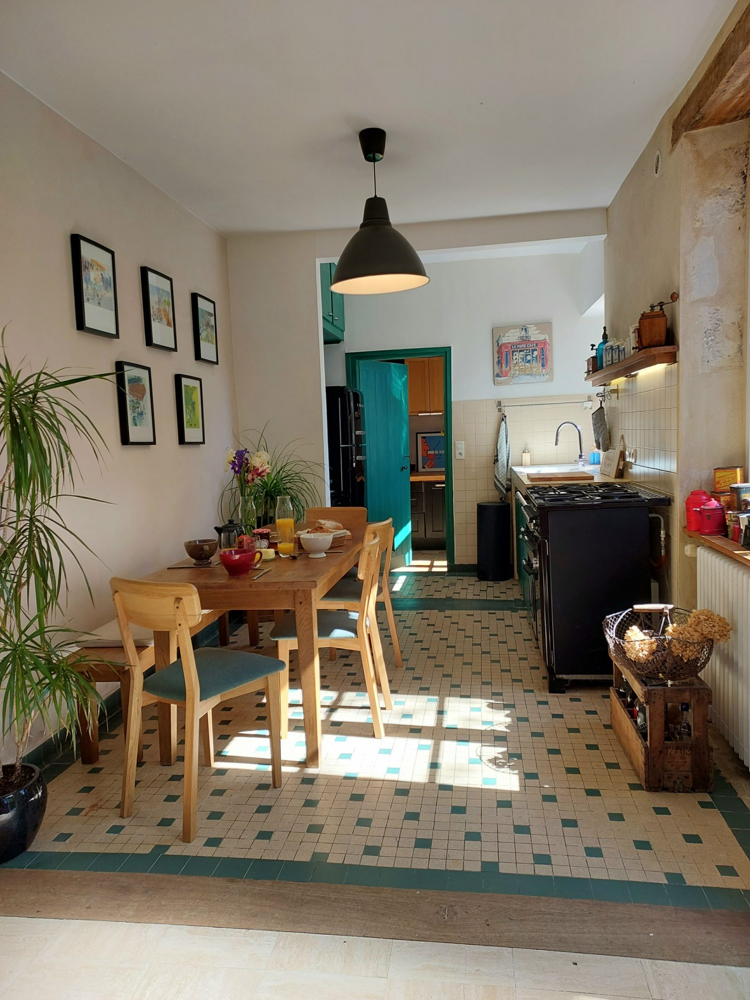
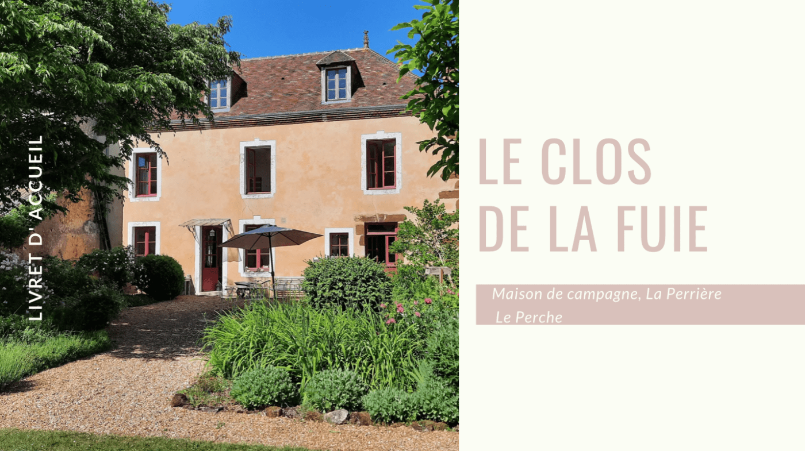

Partager sa maison, c'est partager un bout de nos vies. Voici notre histoire avec le Perche.
Je me présente, je suis Aurélie et c'est moi qui m'attèle à la rédaction de ce site. Je suis mariée à François, un grand sportif qui se régale à faire du trail ou du VTT dans la forêt de Bellême, à courir ou à faire du vélo de course dans nos magnifiques collines (parfois le dénivelé peut surprendre…). Nous nous connaissons depuis les bancs du collège, où nous étions dans la même classe d'allemand LV1, oui oui la classe réputée pour ne compter que des élèves studieux… J'avoue, il y a prescription, avoir copié sur lui lors de contrôles en latin ! Passionnée d'histoire et de patrimoine depuis toujours, ma curiosité naturelle m'a toujours poussée à comprendre et à apprécier l'environnement qui m'entoure. J'aime apprendre, partager et échanger.
Il y a plus de 10 ans, dès notre arrivée à La Perrière, j'ai entrepris de mettre en valeur son patrimoine en créant ses vitrines digitales : www.laperriere.net, le site internet du village et sa page Facebook La Perrière, village perché ! Le site totalise chaque année plus de 50 000 vues et la page compte 1 800 abonnés. Pas mal pour un petit village de 230 habitants !

En tant que passionnée de la Petite Cité de Caractère®, pour le Comité départemental du Tourisme 61, je suis devenue Greeter. Ma mission : accueillir des petits groupes pour leur faire découvrir La Perrière à travers des balades thématiques et des images emblématiques du Perche. J'ai adoré l'expérience ! Aujourd'hui encore, je suis régulièrement sollicitée par l'Office de Tourisme de Bellême ainsi que par des associations pour la qualité de mes visites thématiques, à la fois sérieuses, originales, enthousiastes et divertissantes.
Depuis février 2024, je partage ma passion pour le Perche à travers mon blog Perche Patrimoines, qui vise à promouvoir et valoriser cette destination. Ce blog est une extension de mon groupe privé Facebook Perche Patrimoines, qui compte plus de 2 000 abonnés et que j'ai démarré lors du premier confinement. À travers mes articles, j'aspire à mettre en lumière le patrimoine naturel, humain, historique et architectural du Perche, en racontant des anecdotes, en décryptant des éléments historiques et en partageant des reportages télévisés.
Comment, de la classe d'allemand LV1, nous sommes devenus des « Accourus »…
Les « Accourus » dans le Perche est un terme désignant toute personne non originaire de cette région, sans connotation péjorative. Après un premier séjour dans le Perche, le visiteur tombe sous son charme et ressent immédiatement le désir d'y revenir. Il court littéralement pour y retourner et enfin, y accourt pour s'y établir.
Nous sommes originaires de la campagne voisine du Perche, mais nous ne sommes pas percherons. Je suis née à Dreux et François à Alençon. Nous avons grandi dans la vallée de l'Eure en Eure-et-Loir et nous avons même été dans la même classe au collège et au lycée ! Nos chemins nous ont conduits à Paris pour nos études et nos vies professionnelles.
Après avoir vécu plus de quinze ans dans le tumulte de la capitale et de sa région, peu à peu l'envie d'air et d'espace, de calme et de verdure a commencé à se manifester. Avec l'arrivée de nos garçons, nous avons ressenti le besoin de retrouver un cadre de vie plus proche de la nature, plus authentique. Nous avons commencé à rechercher un lieu où établir notre famille, un endroit où nos enfants pourraient crapahuter entourés de verdure dans un environnement préservé. C'est en 2013 que nous sommes devenus les heureux propriétaires du Clos de la Fuie. Nous sommes donc pleinement et sans hésitation des accourus.
Comment avons-nous trouvé le Clos de la Fuie ?
En 2009, notre quête de vert nous a menés dans le Perche, à seulement 2 h de Paris, cette région que nous connaissons depuis l'enfance et que nous avons redécouverte à travers nos escapades en cyclotourisme. Nous sommes alors charmés par ses collines verdoyantes, l'atmosphère paisible qui y règne, sa nature préservée et aussi et surtout son patrimoine bâti harmonieusement intégré à son paysage.

Nous recherchions un lieu où nous pourrions nous ancrer, voir nos enfants grandir, et créer une maison de famille remplie de souvenirs. En tant qu'urbains, nous avions initialement l'idée de restaurer une ferme isolée avec 3 ou 4 hectares, sans voisin proche. Nous avons fait une proposition d'achat pour une ferme en U, mais une surenchère concurrente a finalement emporté l'affaire, ce qui s'est avéré être une bonne chose ! Après seulement une dizaine de visites de biens en 4 ans, dictées par un cahier des charges long et un budget court, nous avons finalement eu un coup de cœur pour une maison bourgeoise située au cœur de La Perrière, Petite Cité de Caractère®. Dès notre première visite, cette demeure singulière avec ses éléments anciens, sa pierre de roussard chaleureuse, et son jardin incroyable nous a profondément touchés.
Pourquoi Le Clos de la Fuie est aussi votre maison de campagne ?
Après des travaux pour moderniser notre nouvelle demeure et gagner en confort, tout en préservant son charme d'antan, nous la partageons avec vous, en espérant qu'elle vous plaise autant qu'à nous. Nous avons pris le temps de la meubler patiemment, petit à petit, en chinant des meubles dans les brocantes et les vide-greniers de la région, pour en faire un lieu chaleureux et accueillant.


Aujourd'hui, Le Clos de la Fuie est devenu bien plus qu'un simple lieu de résidence. Il incarne nos rêves et nos aspirations, un refuge où nous trouvons la sérénité en profitant du soleil, du jardin, et des plaisirs simples de la vie. Nous apprécions les volumes, la pierre, la lumière, l'accès direct à la nature et à notre dynamique et vivant village percheron, ainsi qu'à toutes les facilités qu'il offre : épicerie, boulangerie bio, restaurants. Tout est à portée de main, ce qui rend nos journées agréables sans avoir besoin de prendre la voiture.
Notre maison est particulièrement bien équipée. Elle dispose d'un wifi performant pour le télétravail et de tout un arsenal de jeux, d'une écurie de vélos et regorge de livres et de BD pour divertir toute la tribu ! Et en bonus, une salle de jeux et une cabane sur pilotis ! Nous avons pris le temps de penser à tous les petits extras qui pourraient vous faire plaisir et pour que vous veniez le plus léger possible. Notre objectif : que notre maison devienne votre maison le temps de votre séjour et que vous ayez envie de revenir.
Nous sommes ravis de vous accueillir pour une expérience reposante et ressourçante. Nous espérons que le Clos de la Fuie vous séduira et que vous pourrez vous imprégner de la magie du Perche pendant votre séjour. Nous sommes à votre disposition pour répondre à toutes vos questions et vous aider à découvrir notre cher Perche.
Un véritable guide pour vous accompagner tout au long de votre séjour…
Lors de votre réservation au Clos de la Fuie, nous vous offrons par mail votre livret d'accueil avec nos coups de cœur et nos suggestions en format PDF. Nous l'avons rédigé avec soin et nous l'actualisons régulièrement.

Vous y trouverez toutes les informations nécessaires pour faciliter votre séjour et vous permettre de profiter pleinement de tous les atouts de notre maison, de notre village, du Perche et surtout de vous sentir comme chez vous !
Nous avons aussi noté des informations pratiques pour faire vos courses, les jours de marché, ainsi qu'une sélection de restaurants et d'activités touristiques disponibles aux alentours. Pour les tribus avec des têtes blondes, nous indiquons également les activités testées et approuvées par nos enfants et que nous vous recommandons pour vous créer de beaux souvenirs.
Ce livret d'accueil traduit notre passion pour le Perche, le Patrimoine et l'Accueil. Bien entendu, nous restons à votre écoute pour répondre à vos envies et demandes particulières. En attendant, nous vous proposons les articles du blog Perche Patrimoines pour avoir un aperçu de toute la singularité et la pluralité du Perche.
Soyez les bienvenus au Clos de la Fuie, votre maison de campagne à La Perrière !